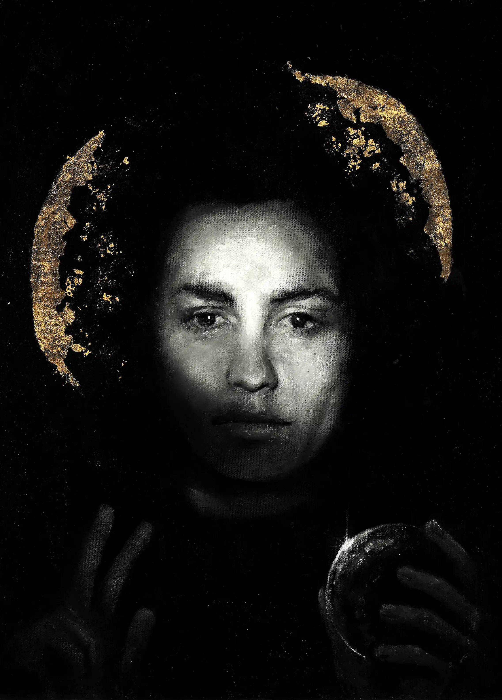
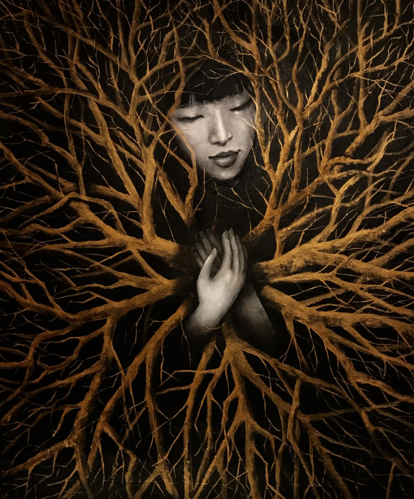
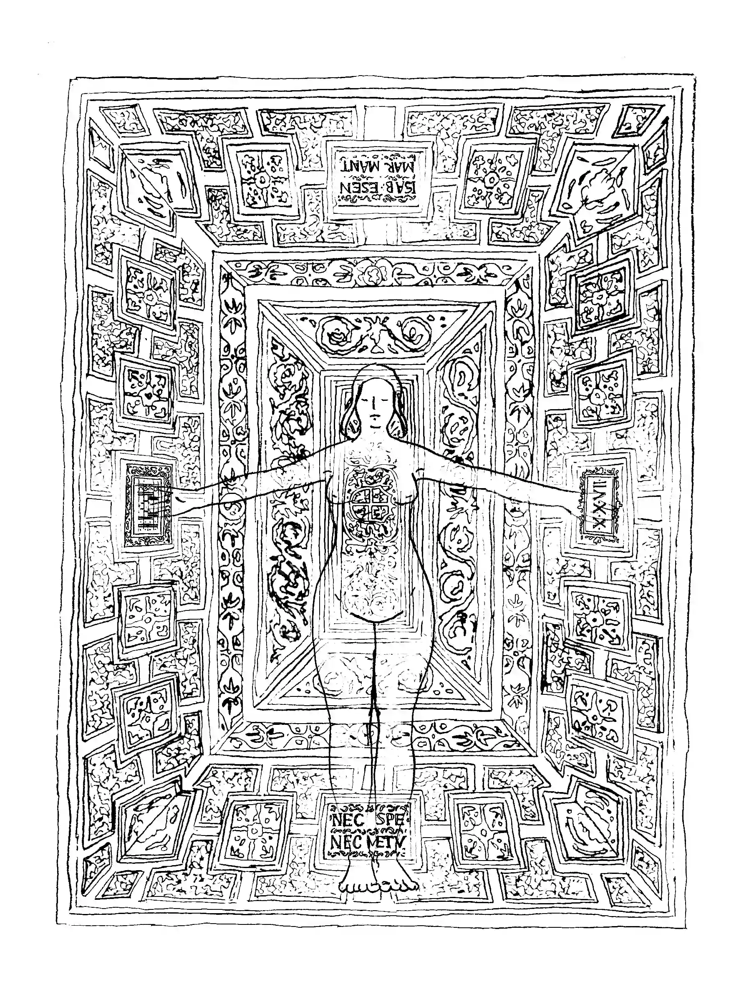

Salvator Mundi, acrylic and gold leaf on canvas The Infinity Within, acrylic on canvas
The Infinity Within, acrylic on canvas

The Infinity Within: Creator, acrylic on canvas Promise, acrylic on canvas
Promise, acrylic on canvas
 Sun Tunnels, graphite on paper
Sun Tunnels, graphite on paper
 Insect Mother, acrylic on canvas
Insect Mother, acrylic on canvas
 St. Jessica, acrylic on canvas
St. Jessica, acrylic on canvas

Isabella D'Este, ink on paper Byrrhus Beetle, acrylic on canvas
Byrrhus Beetle, acrylic on canvas